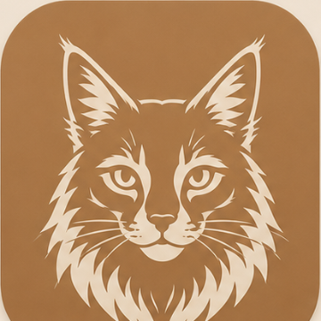
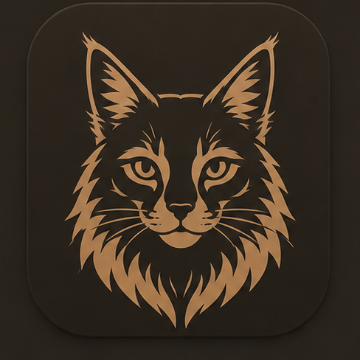
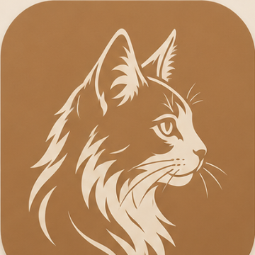
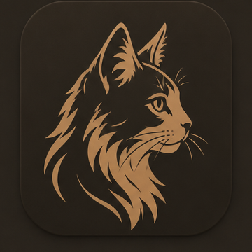
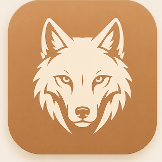
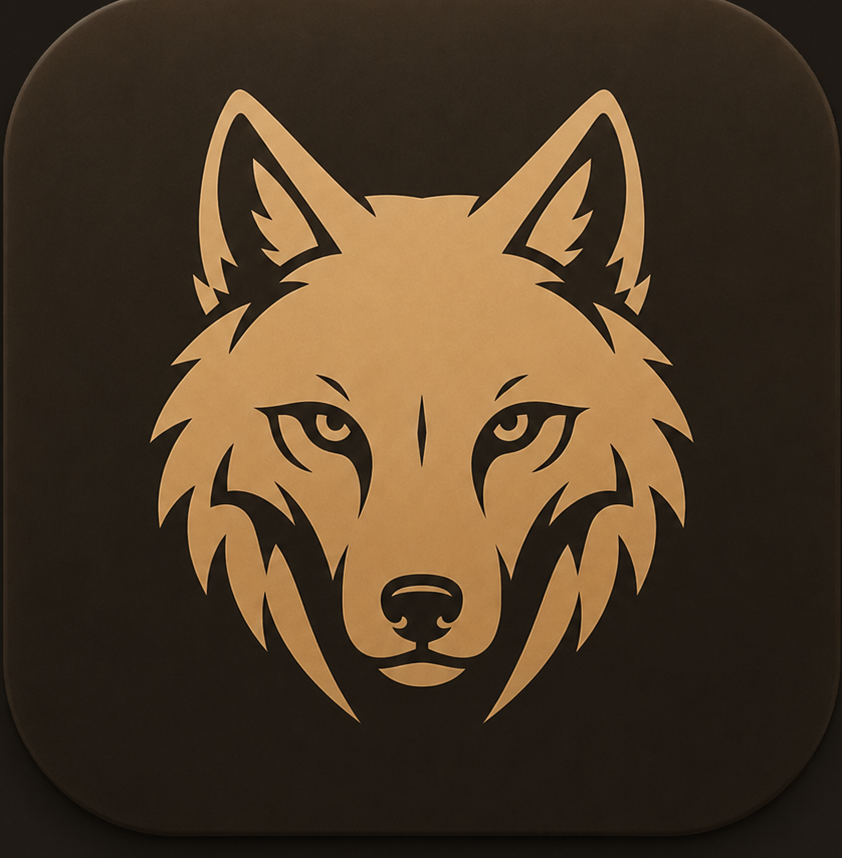
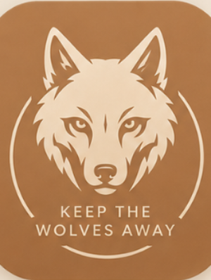
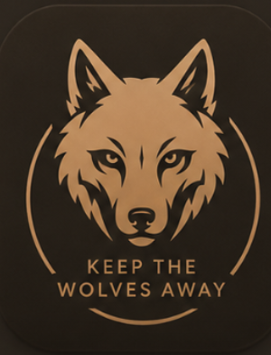

Een verzameling merkmarkeringen voor Mindful — geboren tijdens de burn-out, met een knipoog naar Keep the Wolves Away van Uncle Lucius. Elke markering bestaat in een lichte (koper) en donkere (walnoot) variant.






De wolf zonder tekst is de huidige markering in de app-headers — koper op licht, walnoot-goud op donker.


“Keep the Wolves Away” liep als een rode draad door de burn-out waarin deze app ontstond. De wolf-met-tekst markering draagt die titel mee — een stille herinnering aan waar het begon.